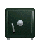
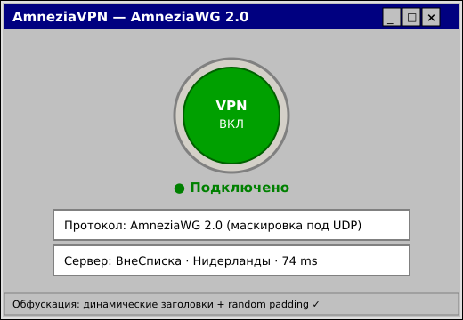

Пошаговая инструкция: установка AmneziaVPN и настройка AmneziaWG 2.0 для обхода DPI, глушилок и белых списков

ЧТО ТАКОЕ AMNEZIAWG 2.0
AmneziaWG — это форк WireGuard со встроенной маскировкой трафика. Сохраняет скорость и
шифрование WireGuard, но прячет себя от DPI. Версия 2.0 (2026) — серьёзный
апгрейд: вместо статичных значений использует динамические диапазоны заголовков, добавляет
случайные байты-заполнители ко всем типам сообщений и имитирует настоящие UDP-протоколы.
Это нужно потому, что DPI научился ловить старые обфускации по структуре пакетов. AmneziaWG 2.0 —
один из самых устойчивых способов обхода в России в 2026 году.
ПОШАГОВАЯ НАСТРОЙКА
1Установи приложение AmneziaVPN:
Android: Google Play → «AmneziaVPN», или APK с GitHub (amnezia-vpn/amnezia-client)
iPhone/iPad: App Store → «AmneziaVPN»
Windows / Mac / Linux: с сайта amnezia.org или из GitHub-релизов
Выбери способ: из файла, по ссылкеvpn:// или QR-код
Приложение определит протокол AmneziaWG 2.0 автоматически
Сервер «ВнеСписка» появится на главном экране
4Подключись:
Нажми большую круглую кнопку в центре экрана
Разреши создание VPN-профиля (запросит система)
Индикатор загорится зелёным, статус «Подключено» = готово!

ЕСЛИ НЕ ПОДКЛЮЧАЕТСЯ
AmneziaWG не подключается на мобильном интернете
Убедись, что используешь именно AmneziaWG 2.0 (старая обфускация уже хуже работает). Параметры обфускации (Jc, Jmin, Jmax, H1–H4) должны совпадать с сервером — бери свежий конфиг в @vnespiskabot.
Подключается, но интернета нет
Проверь, что выбран сервер «ВнеСписка» и включён режим VPN, а не Split Tunneling с исключениями. Перезапусти приложение.
AmneziaWG или VLESS Reality — что лучше?
Оба отлично обходят DPI в 2026. VLESS Reality маскируется под HTTPS (TCP), AmneziaWG 2.0 — под UDP. Если один не идёт на твоём операторе — пробуй второй.